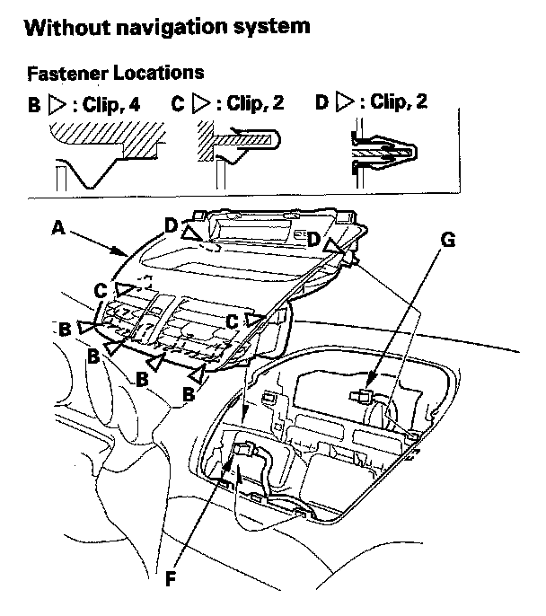

Dashboard Center Panel
Dashboard Center Panel Removal/InstallationSpecial Tools Required
KTC trim tool set SOJATP2014 *
* Available through the American Honda Tool and Equipment Program
NOTE:
- Take care not to scratch the dashboard and its related parts.
- Use the appropriate tool from the KTC trim tool set to avoid damage when removing components.
1. Remove the center upper panel

2. Pull out the dashboard center panel (A) to detach the clips (B, C, D) and to release the hooks (E) (without navigation system), then remove the panel.
3. Disconnect the hazard warning switch/passenger's airbag off indicator connector (F), and on the models without navigation system, center information display connector (G).
Without navigation system
4. Remove the center information display from the dashboard center panel
5. If necessary, peel three pieces of adhesive tape (A, B), then remove the tray mat (C), from the center tray (D).
6. If necessary, remove the screws (A) securing the center tray (B), then separate it from the dashboard center panel (C) by detaching the clips (D).
7. Install the panel in the reverse order of removal, and note these items:
- If the removed tray mat is to be reinstalled, remove all of old adhesive tape from the mat, and clean the back of the mat with isopropyl alcohol where the three pieces of new adhesive tape are to be attached. Attach the tray mat to the center tray with commercially available adhesive tape.
- Make sure all connectors are plugged in properly.
- If the clips are damaged or stress-whitened, replace them with new ones.
- Make sure the tabs located between the bottom clips line up with the slots in the dashboard correctly.
- Push the clips into place securely.